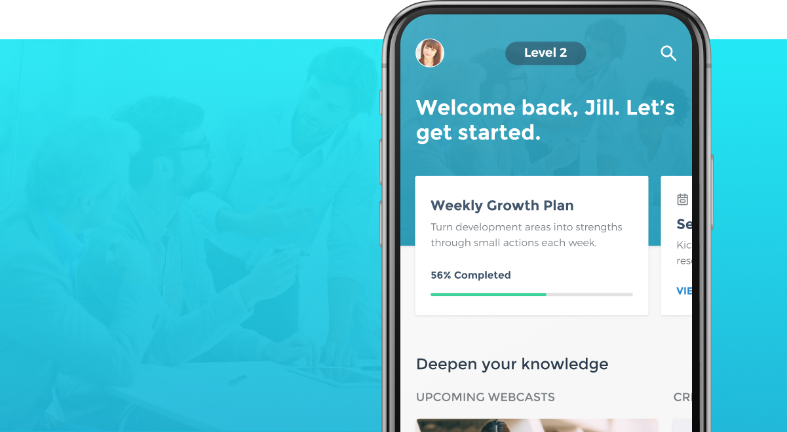
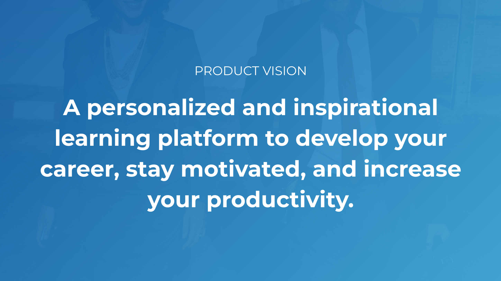
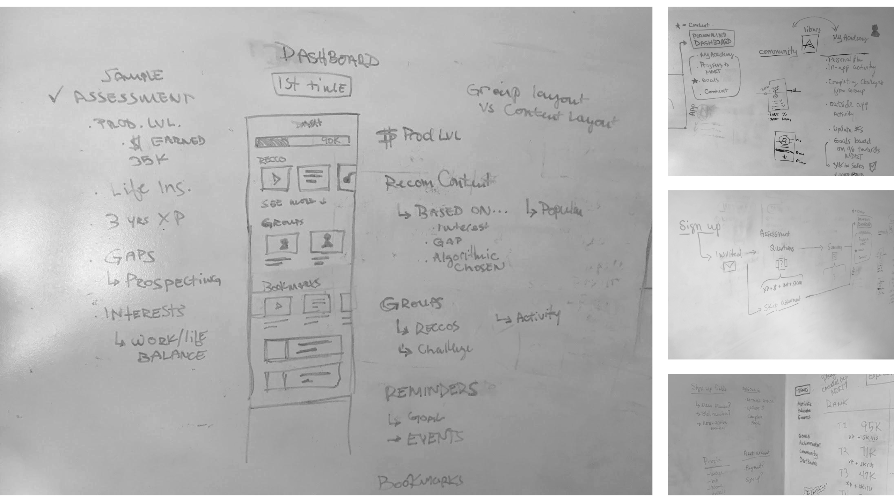
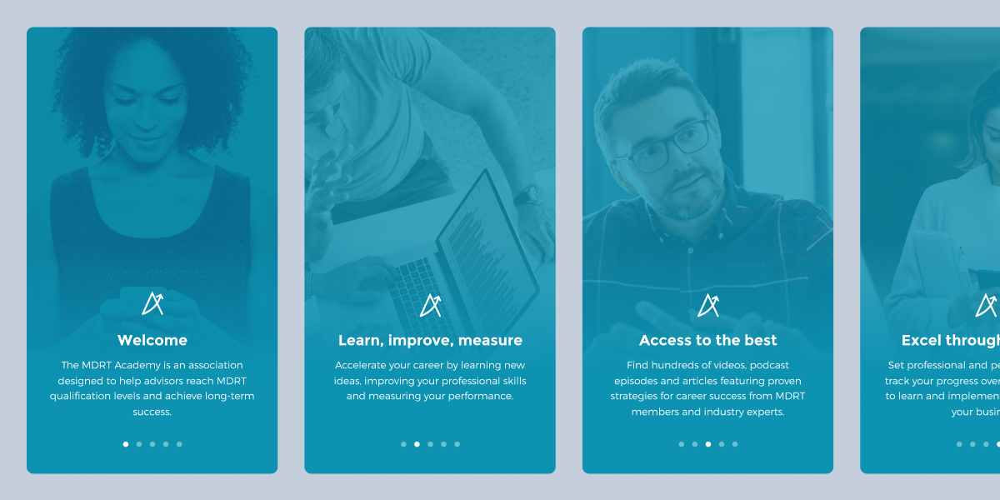
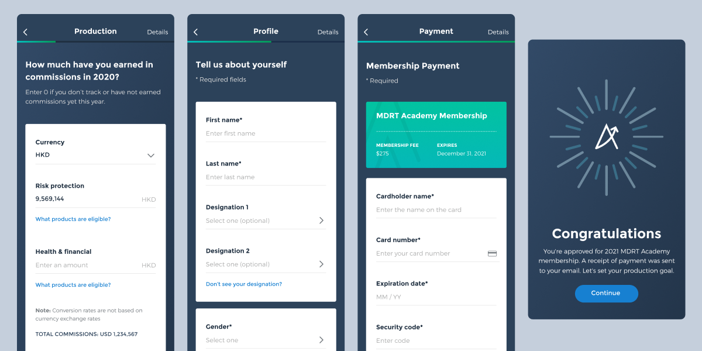
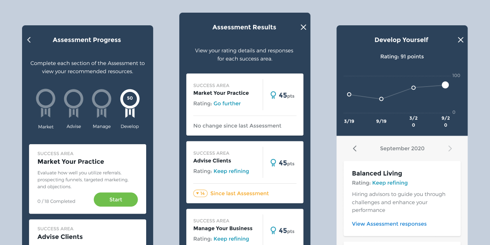
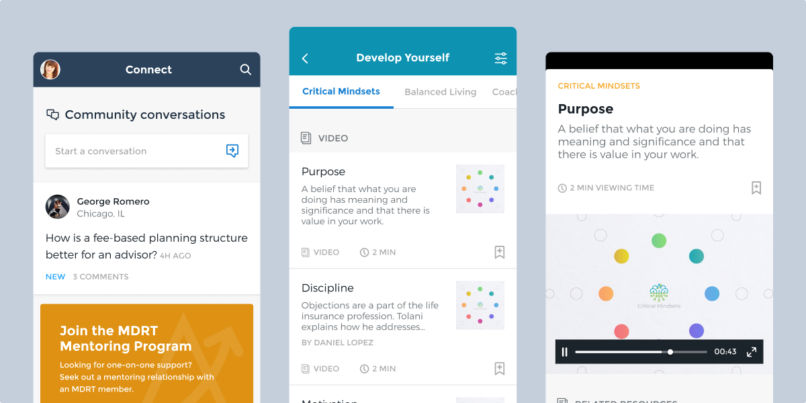
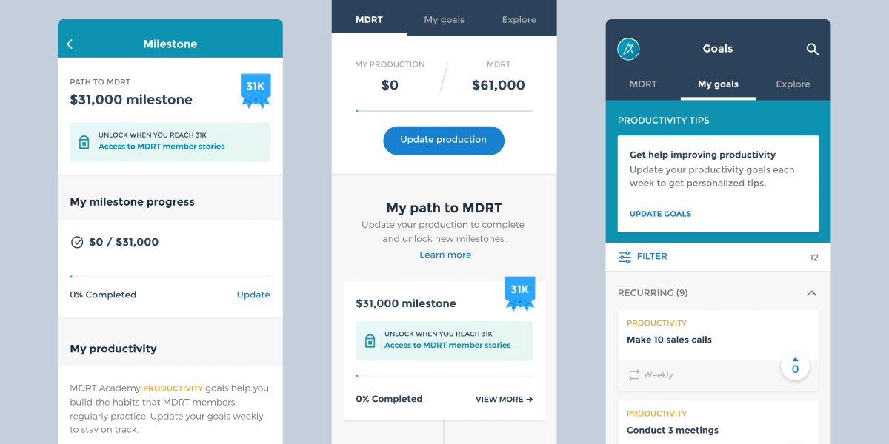

MDRT Academy
MDRT Academy helps insurance agents find resources and guidance to grow their careers. MDRT Academy came to Eight Bit to help create, concept, design, and build the app platform across mobile and desktop devices.
The insurance industry is notorious for being extremely difficult to break into due to high rates of rejections. MDRT wanted to create a new app, called MDRT Academy, that was designed to give resources, encouragement, and guidance to help these struggling agents find their foothold and increase
For over 4 years, I have played a key role in leading and developing the product from initial vision, feature planning and scoping, workshop facilitation, user research, design, prototyping, and stakeholder presentation and alignment.
🔎 Activities & Accomplishments
- Created alignment, production direction, and inspired teams and stakeholders over the duration of the engagement. Facilitated difficult discussions with stakeholders to unblock teams and maintain progress.
- Designed, architected, concepted, and prototyped almost every interaction and screen in the app supporting a variety of experiences such as onboarding, content, goal-setting, progress tracking, community, and more.
- Created, grew, and maintained a robust design system for the product with over 50 components, patterns, and elements.
- Planned, facilitated, and ran various research initiatives such as usability testing, user interviews, and surveys.
- Lead the product team with roadmapping, feature planning and scoping, product vision setting, and prioritization.
- Collaborated with various teams to bring ideas to life including dev, project management, and SMEs.
🎉 Outcomes & Impact
- The product exited a beta period 2 years ago and is now available to the general public.
- User growth in the past couple of years has been steadily climbing to almost 1000.
- Established and made improvements to our product development process.
- Influenced marketing and sales effort with design-thinking and support.
- Played a key-role in client satisfaction and retention.
The home screen (left) which guides the user to how they should spend their time in the app to grow their skills. The user profile (middle) displayed user activity, professional details, and preferences. The achievements (right) rewarded users for activity in the app that would gradually become more difficult over time. Illustrations by Jason Oliveira
I've helped drive the vision, principles, goals, and roadmap for the product for the past 4 years and includes the creation of various processes, documents, and workshops.
Sketches of the app in whiteboarding rooms and collaboration areas.
Onboarding after a user downloads the app. This is meant to introduce the user to the value proposition and core features of the app.
Sign up and payment flow. This flow went through multiple iterations where we kept removing unnecessary fields (which stakeholders needed to be convinced of). We used analytics and user testing to find the right balance of information-collection, ease of use, and speed.
The app contains an assessment (or quiz) that upon completion would identify areas of growth for the user and recommended content and activities to engage in.
Our content experience was the most valued part of the Academy experience. Users could browse a deep library of curated content from MDRT or or ask questions in a forum-style community area.
Goals plays an important role in reinforcing what users were learning in the app. We came up with different interactions and reward models to incentivize goal creation and completion.